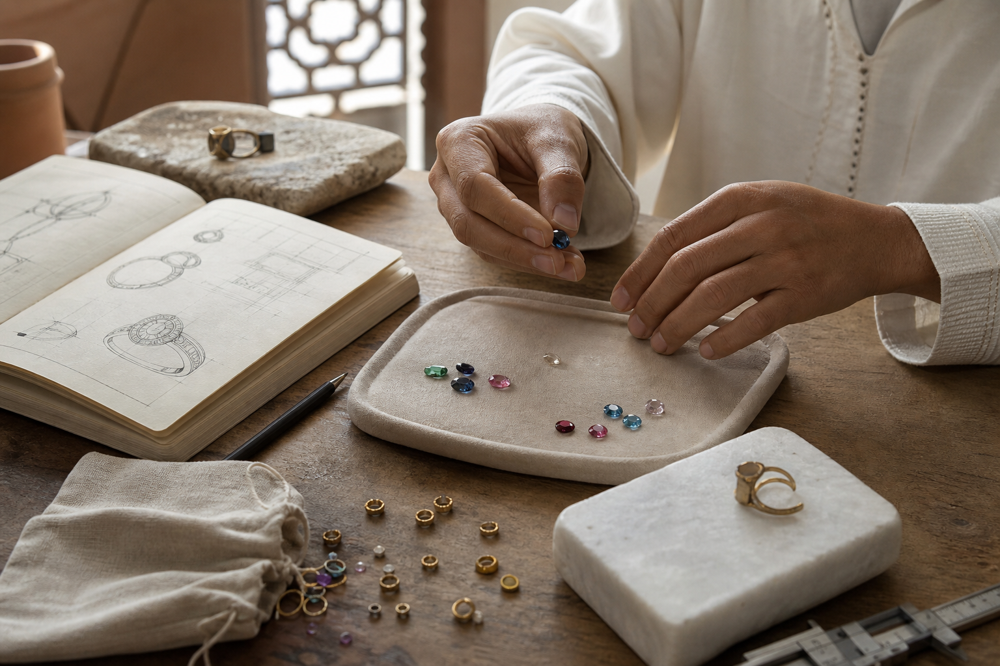

FAQ
Questions fréquentes
Les réponses essentielles avant de choisir une pierre, un bijou prêt à porter ou une création sur-mesure.

Les prix sont-ils définitifs ?
Les prix affichés sont indicatifs. Le prix final dépend de la pierre, du poids d'or, de la taille, du montage et de la disponibilité.
Peut-on acheter une pierre seule ?
Oui, Maison Aurel peut proposer une pierre seule ou l'utiliser comme point de départ d'une création personnalisée.
Les pierres sont-elles certifiées ?
Une fiche descriptive ou un certificat est fourni lorsque disponible. Maison Aurel évite de promettre une certification si elle n'est pas documentée.
Quel délai pour une création ?
Le délai dépend du modèle et de la pierre. Il doit être confirmé au moment du devis.
Comment demander conseil ?
Le formulaire de contact prépare une demande structurée avec pierre souhaitée, message, téléphone et email.